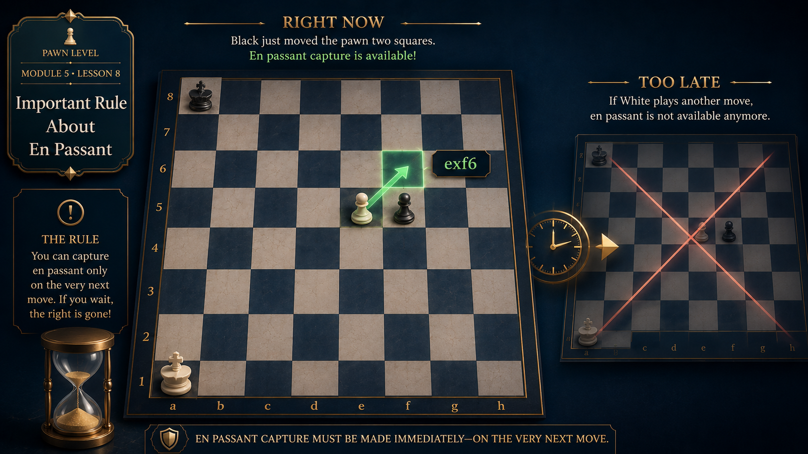

The Rule
If your opponent moves a pawn two squares forward, you may capture it as if it had only moved one square.
But you must do this on your very next turn. If you make any other move first, the chance is gone forever.
Why This Rule?
The en passant rule was created to prevent pawns from bypassing each other.
Before the two-square pawn move was introduced, a pawn on its starting square could only move forward one square. A capturing pawn could catch it. When the two-square move was added, pawns could suddenly slip past enemy pawns. The en passant rule restored the original capture possibility.
The "immediate" requirement makes sense: if the pawn is allowed to keep moving, the capturing opportunity no longer represents the same position. You must decide right away.
Example
A position where en passant is available now but will not be later.
Black pawn on d7 moves two squares to d5. A white pawn sits on e5. En passant is now available.
If White plays exd6 e.p. immediately, White captures the pawn. But if White makes any other move first, the chance is lost.
White plays a different move, like Nf3. Now it is Black's turn. Black can protect the pawn. En passant is no longer possible, even if Black later moves the pawn again.
The opportunity expires. You cannot go back and capture en passant after making another move.

Remember
Key points to keep in mind about the en passant rule.
e.p. at the end, like exd6 e.p.
Review Questions
Use these questions to check understanding.
When must you play en passant?
On the very next move after the opponent pushes a pawn two squares.
What happens if you play a different move first?
The en passant opportunity is lost forever.
Why does the en passant rule exist?
To prevent pawns from bypassing each other when using the two-square move.
Can you capture en passant three moves later?
No. En passant must be done immediately or not at all.